Guatemala
Notes:
- 1 Int’l $ = 4.01 GTQ (Quetzal) using 2020 World Bank PPP conversion rates (1 Int’l $ = 1 USD)
- Focus crop = bean and potato
- All costs are reported per hectare, except for labeling and packaging costs
- For beans these costs are per bag of 3 pounds or 1.36 kg
- For potato these costs are per crate of 22.68 kg
- Other marketing costs are assumed also per hectare
- Inspection and certification fees are per farm (total fees for a single season)
- Actual sales are assumed for the planted area (not by hectare)
- Sales prices are assumed by bag or crate (not by kg)
- Some farmers grow multiple crops
Survey Recodes
xrate <- 4.01
# Load respondent data
hh <- fread("../data/gtm/hh.csv")
group <- fread("../data/gtm/group.csv")There are 21 variables and 39 observations in this set. A summary is shown below.
print(dfSummary(hh), max.tbl.height=500)Error : thematic doesn’t (yet) support the ‘PNG’ graphics device. Please report this error to https://github.com/rstudio/thematic/issues/new Error : thematic doesn’t (yet) support the ‘PNG’ graphics device. Please report this error to https://github.com/rstudio/thematic/issues/new Error : thematic doesn’t (yet) support the ‘PNG’ graphics device. Please report this error to https://github.com/rstudio/thematic/issues/new Error : thematic doesn’t (yet) support the ‘PNG’ graphics device. Please report this error to https://github.com/rstudio/thematic/issues/new Error : thematic doesn’t (yet) support the ‘PNG’ graphics device. Please report this error to https://github.com/rstudio/thematic/issues/new Error : thematic doesn’t (yet) support the ‘PNG’ graphics device. Please report this error to https://github.com/rstudio/thematic/issues/new Error : thematic doesn’t (yet) support the ‘PNG’ graphics device. Please report this error to https://github.com/rstudio/thematic/issues/new Error : thematic doesn’t (yet) support the ‘PNG’ graphics device. Please report this error to https://github.com/rstudio/thematic/issues/new Error : thematic doesn’t (yet) support the ‘PNG’ graphics device. Please report this error to https://github.com/rstudio/thematic/issues/new Error : thematic doesn’t (yet) support the ‘PNG’ graphics device. Please report this error to https://github.com/rstudio/thematic/issues/new Error : thematic doesn’t (yet) support the ‘PNG’ graphics device. Please report this error to https://github.com/rstudio/thematic/issues/new Error : thematic doesn’t (yet) support the ‘PNG’ graphics device. Please report this error to https://github.com/rstudio/thematic/issues/new Error : thematic doesn’t (yet) support the ‘PNG’ graphics device. Please report this error to https://github.com/rstudio/thematic/issues/new Error : thematic doesn’t (yet) support the ‘PNG’ graphics device. Please report this error to https://github.com/rstudio/thematic/issues/new Error : thematic doesn’t (yet) support the ‘PNG’ graphics device. Please report this error to https://github.com/rstudio/thematic/issues/new Error : thematic doesn’t (yet) support the ‘PNG’ graphics device. Please report this error to https://github.com/rstudio/thematic/issues/new Error : thematic doesn’t (yet) support the ‘PNG’ graphics device. Please report this error to https://github.com/rstudio/thematic/issues/new Error : thematic doesn’t (yet) support the ‘PNG’ graphics device. Please report this error to https://github.com/rstudio/thematic/issues/new Error : thematic doesn’t (yet) support the ‘PNG’ graphics device. Please report this error to https://github.com/rstudio/thematic/issues/new Error : thematic doesn’t (yet) support the ‘PNG’ graphics device. Please report this error to https://github.com/rstudio/thematic/issues/new Error : thematic doesn’t (yet) support the ‘PNG’ graphics device. Please report this error to https://github.com/rstudio/thematic/issues/new
| Variable | Stats / Values | Freqs (% of Valid) | Graph | Valid | Missing |
|---|---|---|---|---|---|
| Group [character] |
1. ACORDI 2. ADAT, AXOLA, ADIPY 3. PAQUIX 4. SAN BARTOLO |
10 (25.6%) 9 (23.1%) 10 (25.6%) 10 (25.6%) |
IIIII IIII IIIII IIIII |
39 (100.0%) |
0 (0.0%) |
| Province [character] |
1. CAPELLANIA 2. PAQUIX 3. REGADILLOS, CHIANTLA 4. SAN MARTIN CUCHUMATAN |
10 (25.6%) 10 (25.6%) 10 (25.6%) 9 (23.1%) |
IIIII IIIII IIIII IIII |
39 (100.0%) |
0 (0.0%) |
| Code [character] |
1. Agricultor 8 2. Agricultor 9 3. Agricultor 10 4. Agricultor 1 5. Agricultor 2 6. Agricultor 3 7. Agricultor 4 8. Agricultor 5 9. Agricultor 6 10. Agricultor 7 [ 21 others ] |
4 (10.3%) 4 (10.3%) 3 ( 7.7%) 1 ( 2.6%) 1 ( 2.6%) 1 ( 2.6%) 1 ( 2.6%) 1 ( 2.6%) 1 ( 2.6%) 1 ( 2.6%) 21 (53.8%) |
II II I IIIIIIIIII |
39 (100.0%) |
0 (0.0%) |
| Age [character] |
1. 15-29 2. 30 |
4 (10.3%) 35 (89.7%) |
II IIIIIIIIIIIIIIIII |
39 (100.0%) |
0 (0.0%) |
| Sex [character] |
1. Female 2. Male |
5 (12.8%) 34 (87.2%) |
II IIIIIIIIIIIIIIIII |
39 (100.0%) |
0 (0.0%) |
| Cost seed per ha (LCU) [numeric] |
Mean (sd) : 7776.9 (7059.6) min < med < max: 690 < 13225 < 15794.1 IQR (CV) : 13819.5 (0.9) |
690.00 : 19 (48.7%) 13225.00 : 10 (25.6%) 15794.10 : 10 (25.6%) |
IIIIIIIII IIIII IIIII |
39 (100.0%) |
0 (0.0%) |
| Cost of fertilizer per ha (LCU) [numeric] |
Min : 3685.3 Mean : 3689.8 Max : 3703 |
3685.29 : 29 (74.4%) 3703.00 : 10 (25.6%) |
IIIIIIIIIIIIII IIIII |
39 (100.0%) |
0 (0.0%) |
| Cost of pesticide per ha (LCU) [numeric] |
Mean (sd) : 9182.7 (591.6) min < med < max: 8583.8 < 9728.2 < 9775 IQR (CV) : 1167.9 (0.1) |
8583.75 : 19 (48.7%) 9728.25 : 10 (25.6%) 9775.00 : 10 (25.6%) |
IIIIIIIII IIIII IIIII |
39 (100.0%) |
0 (0.0%) |
| Cost of transport per ha (LCU) [numeric] |
Mean (sd) : 2322.6 (1163.3) min < med < max: 1144.5 < 3433.5 < 3450 IQR (CV) : 2297.2 (0.5) |
1144.50 : 19 (48.7%) 3433.50 : 10 (25.6%) 3450.00 : 10 (25.6%) |
IIIIIIIII IIIII IIIII |
39 (100.0%) |
0 (0.0%) |
| Labor cost (LCU) [numeric] |
Mean (sd) : 18187 (4397.1) min < med < max: 13734 < 22363.5 < 22471 IQR (CV) : 8683.3 (0.2) |
13734.00 : 19 (48.7%) 22363.53 : 10 (25.6%) 22471.00 : 10 (25.6%) |
IIIIIIIII IIIII IIIII |
39 (100.0%) |
0 (0.0%) |
| Inspection / certification Fees (LCU) [numeric] |
Min : 0 Mean : 12.2 Max : 23.8 |
0.00 : 19 (48.7%) 23.82 : 20 (51.3%) |
IIIIIIIII IIIIIIIIII |
39 (100.0%) |
0 (0.0%) |
| Labelling costs per kg (LCU) [numeric] |
Mean (sd) : 77.7 (77.5) min < med < max: 16.5 < 40.6 < 324.5 IQR (CV) : 91.2 (1) |
25 distinct values | : : : : . : : : . |
39 (100.0%) |
0 (0.0%) |
| Packaging costs per kg (LCU) [numeric] |
Mean (sd) : 3194.7 (4107.4) min < med < max: 49.6 < 1947.1 < 15576.7 IQR (CV) : 5202.3 (1.3) |
25 distinct values | : : : : : : : : . |
39 (100.0%) |
0 (0.0%) |
| Other marketing costs? (LCU) [numeric] |
Mean (sd) : 381.4 (322.8) min < med < max: 113.4 < 113.4 < 1050 IQR (CV) : 374.1 (0.8) |
12 distinct values | : : : : : : : : . : |
39 (100.0%) |
0 (0.0%) |
| Estimated Yield (kg/ha) [numeric] |
Mean (sd) : 66157.6 (86000.7) min < med < max: 2105.9 < 42117.6 < 336940.8 IQR (CV) : 103390.5 (1.3) |
13 distinct values | : : : : . : : : . . |
39 (100.0%) |
0 (0.0%) |
| Selling price of seed per kg (LCU) [numeric] |
Mean (sd) : 7473.5 (7745.6) min < med < max: 1386 < 3992.8 < 31942.4 IQR (CV) : 9248.3 (1) |
25 distinct values | : : : : . : : : . |
39 (100.0%) |
0 (0.0%) |
| How many kg were sold in the season? [integer] |
Mean (sd) : 3049.9 (3857.5) min < med < max: 90 < 1840 < 14720 IQR (CV) : 4868.5 (1.3) |
25 distinct values | : : : : : : : : |
39 (100.0%) |
0 (0.0%) |
| What was your expected gross margin? [numeric] |
Mean (sd) : 2837.2 (3382.9) min < med < max: 170 < 1566.8 < 12534.4 IQR (CV) : 4406.7 (1.2) |
26 distinct values | : : : : : : : : . |
39 (100.0%) |
0 (0.0%) |
| How long have you been a member of this
group? [integer] |
Mean (sd) : 3.9 (2.6) min < med < max: 1 < 3 < 15 IQR (CV) : 3 (0.7) |
1 : 3 ( 7.7%) 2 : 8 (20.5%) 3 : 10 (25.6%) 4 : 7 (17.9%) 5 : 7 (17.9%) 6 : 1 ( 2.6%) 8 : 1 ( 2.6%) 10 : 1 ( 2.6%) 15 : 1 ( 2.6%) |
I IIII IIIII III III |
39 (100.0%) |
0 (0.0%) |
| Area (ha) [numeric] |
Mean (sd) : 0.1 (0.1) min < med < max: 0 < 0.1 < 0.4 IQR (CV) : 0.1 (0.7) |
0.04!: 15 (38.5%) 0.09!: 14 (35.9%) 0.13!: 5 (12.8%) 0.18!: 2 ( 5.1%) 0.26!: 1 ( 2.6%) 0.31!: 1 ( 2.6%) 0.35!: 1 ( 2.6%) ! rounded |
IIIIIII IIIIIII II I |
39 (100.0%) |
0 (0.0%) |
| Crop [character] |
1. bean 2. potato |
19 (48.7%) 20 (51.3%) |
IIIIIIIII IIIIIIIIII |
39 (100.0%) |
0 (0.0%) |
Recode variable names.
setnames(hh, lbl$label, lbl$code, skip_absent=T)Additional recodes for categorical variables.
setorder(hh, adm1_nm, group, gender, crop)
hh[, `:=`(
hhid = paste("GTM", gsub(" ", "0", format(1:.N, width=3)), sep=""),
iso3 = "GTM",
crop = factor(crop),
adm1_nm = factor(adm1_nm),
group = factor(group, levels=c(
"ACORDI",
"PAQUIX",
"SAN BARTOLO",
"ADAT, AXOLA, ADIPY"
), labels=c(
"Acordi",
"Paquix",
"San Bartolo",
"Adat Axola Adipy"
)),
gender = factor(gender, levels=c("Male", "Female")),
age = factor(age, levels=c("15-29", "30"), labels=c("< 30", "≥ 30")),
years = factor(member_years >= 5, levels=c(F, T), labels=c("< 5", "≥ 5"))
)]Constructed Variables
Farmers report both expected yields yield_ha_kg and actual sales in the last season sales_ha_kg, so we can construct both expected and realized costs in monetary terms costs_exp_ha_lcu and costs_real_ha_lcu. Note that we then use realized sales to calculate profitability metrics. We assume that in Guatemala marketing costs for both bean and potato are reported for the entire farm (not by kg as in Vietnam).
hh[, `:=`(
tran_ha_lcu = as.numeric(tran_ha_lcu),
# Reported sales assumed by planted area
sales_ha_kg = sales_ha_kg/area_ha,
# Reported sales price assumed by bag/crate
sales_kg_lcu = fcase(
crop=="bean", 1/1.36,
crop=="potato", 1/22.68) * sales_kg_lcu
)][,
tran_ha_lcu := fifelse(is.na(tran_ha_lcu), 0, tran_ha_lcu)
][, `:=`(
# Expected costs
costs_exp_ha_lcu =
# Per ha costs
seed_ha_lcu + fert_ha_lcu + pest_ha_lcu + tran_ha_lcu + labor_ha_lcu +
cert_lcu + mark_kg_lcu +
# Per kg costs
fcase(
crop=="bean", 1/1.36,
crop=="potato", 1/22.68) * yield_ha_kg * (labl_kg_lcu + pckg_kg_lcu),
# Realized costs
costs_real_ha_lcu =
# Per ha costs
seed_ha_lcu + fert_ha_lcu + pest_ha_lcu + tran_ha_lcu + labor_ha_lcu +
cert_lcu + mark_kg_lcu +
# Per kg costs
fcase(
crop=="bean", 1/1.36,
crop=="potato", 1/22.68) * sales_ha_kg * (labl_kg_lcu + pckg_kg_lcu)
)]
hh[, summary(costs_exp_ha_lcu)]## Min. 1st Qu. Median Mean 3rd Qu. Max.
## 130758 141622 3746290 25100149 25565442 236288594hh[, summary(costs_real_ha_lcu)]## Min. 1st Qu. Median Mean 3rd Qu. Max.
## 127592 149713 3709358 6396050 10804345 29307914Using realized costs and sales, we construct gross margin per ha margin_ha_lcu, total sales sales_ha_sh and profit margin margin_ha_sh per unit of (variable) input costs, and costs_ha_ppp, sales_ha_ppp and margin_ha_ppp in PPP terms to allow for comparisons across groups and countries.
We also construct a measure of total factor productivity tfp as expected output per unit of (expected) input costs. Strictly speaking it is only “partial factor productivity” here because we don’t include the rental cost of land, land preparation costs, irrigation costs, and the costs of animal and mechanical implements.
hh[, `:=`(
sales_exp_ha_lcu = yield_ha_kg * sales_kg_lcu,
sales_real_ha_lcu = sales_ha_kg * sales_kg_lcu
)][, `:=`(
margin_ha_lcu = sales_real_ha_lcu - costs_real_ha_lcu
)][, `:=`(
# Shares
sales_ha_sh = sales_real_ha_lcu / costs_real_ha_lcu,
margin_ha_sh = margin_ha_lcu / costs_real_ha_lcu,
# PPP$
costs_ha_ppp = costs_real_ha_lcu / xrate,
sales_ha_ppp = sales_real_ha_lcu / xrate,
margin_ha_ppp = margin_ha_lcu / xrate
)][, `:=`(
tfp = yield_ha_kg / (costs_exp_ha_lcu / xrate)
)]Note that expected seed yields and actual sales look somewhat inconsistent, especially for potato. Packaging costs for potato seems also too high.
ggplot(hh, aes(x=hhid, color=group)) +
geom_linerange(aes(ymin=yield_ha_kg, ymax=sales_ha_kg), size=.6) +
geom_point(aes(y=yield_ha_kg), shape=20, size=1.4) +
geom_point(aes(y=sales_ha_kg, fill=group, shape=sales_ha_kg-yield_ha_kg>0), size=1.4) +
scale_y_continuous(labels=comma) +
scale_shape_manual(values=25:24) +
facet_wrap(~crop, scales="free") +
guides(x="none", shape="none") +
labs(x=NULL, y=NULL, color="", fill="",
title="Profit Margin (PPP$ / ha) - Guatemala",
subtitle="Each bar is a respondent's gross profit margin") +
theme_def(
legend.position="right",
panel.grid.major.x=element_blank()
)
Verify unit price (per kg) in PPP$ terms.
hh[crop=="bean", summary(sales_kg_lcu / xrate)]## Min. 1st Qu. Median Mean 3rd Qu. Max.
## 254.1 259.8 279.6 374.7 519.6 593.0hh[crop=="potato", summary(sales_kg_lcu / xrate)]## Min. 1st Qu. Median Mean 3rd Qu. Max.
## 43.90 87.81 118.54 138.90 161.89 351.22Below we append some of the information that was recorded at the group level.
kbl(group, align="llc")| Group | Region | District | Location | Market Access | Irrigation | Seasons | Transboundary trade | Members | Established | Notes |
|---|---|---|---|---|---|---|---|---|---|---|
| ADAT, AXOLA, ADIPY | Huehuetenango | Aguacatan | Climentoro | – | No | 1 | No | 13 | 1974 |
|
| PAQUIX | Huehuetenango | Chiantla | Paquix | – | No | 1 | No | 50 | 1998 |
|
| ACORDI | Huehuetenango | Chiantla | Capellania | – | No | 1 | No | 29 | 1998 |
|
| SAN BARTOLO | Huehuetenango | Chiantla | Regadillos | – | Yes | 2 | No | 55 | 2016 |
-Incorporación de abono orgánico.
-Dos ciclos de producción (primer ciclo los meses de enero, febrero y marzo; segundo ciclo meses de noviembre y diciembre).
|
# Same recodes in the group-level dataset
group[, Group := factor(Group, levels=c(
"ACORDI",
"PAQUIX",
"SAN BARTOLO",
"ADAT, AXOLA, ADIPY"
), labels=c(
"Acordi",
"Paquix",
"San Bartolo",
"Adat Axola Adipy"
))]
# Merge
hh[group, on=.(group=Group), `:=`(
group_year = `Established`,
group_size = `Members`,
seasons = `Seasons`,
irrigated = `Irrigation`,
market_access = `Market Access`,
ttrade = `Transboundary trade`
)]Finally we normalize all farmer cost line items into a “long” table hh_prod_cost for charting.
# Normalize production cost table per ha
hh_prod_cost <- hh[, .(hhid,
Seeds = seed_ha_lcu,
Fertilizer = fert_ha_lcu,
Pesticides = pest_ha_lcu,
Labor = labor_ha_lcu,
Transport = tran_ha_lcu,
Certification = cert_lcu,
Labeling = fcase(
crop=="bean", 1/1.36,
crop=="potato", 1/22.68) * sales_ha_kg * labl_kg_lcu,
Packaging = fcase(
crop=="bean", 1/1.36,
crop=="potato", 1/22.68) * sales_ha_kg * pckg_kg_lcu,
Marketing = mark_kg_lcu
)]
hh_prod_cost <- melt(hh_prod_cost, id.vars=1, value.name="lcu", variable.name="type")And we lump all seed marketing costs into a single category.
levels(hh_prod_cost$type) <- levels(hh_prod_cost$type)[c(1,2,3,4,9,9,9,9,9)]
hh_prod_cost <- hh_prod_cost[, .(
lcu = sum(lcu, na.rm=T)
), by=.(hhid, type)
][, `:=`(
# Add cost shares and PPP terms
share = lcu/sum(lcu, na.rm=T),
ppp = lcu/xrate
), by=.(hhid)
][hh, on=.(hhid), `:=`(
# Add classes
group = group,
gender = gender,
age = age,
years = years,
crop = crop
)]Descriptive Statistics
Respondent Characteristics
Breakdown by categorical variables.
ggplot(
hh[, .N, by=.(group, age, gender, crop, years)],
aes(axis1=crop, axis2=gender, axis3=age, axis4=years, y=N)) +
geom_alluvium(aes(fill=group), width=1/4, alpha=.7, color="white") +
geom_stratum(width=1/4) +
geom_text(stat="stratum", aes(label=after_stat(stratum)), angle=90, size=2.2) +
scale_x_discrete(limits=c("Crop", "Gender", "Age", "Years in Seed Club")) +
labs(y=NULL, fill="Seed Club",
title = "Categories of Survey Respondents - Guatemala",
subtitle = "Stratified by seed club") +
theme_def(axis.text=element_text(face="bold"))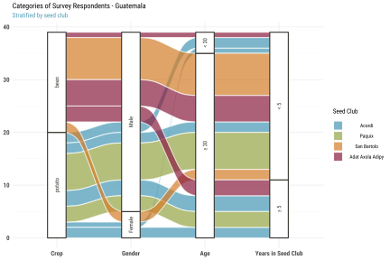
Showing contingency table between each pair of categorical variables (seed club group, gender, age age, and years in seed club years).
ttt_ftable(hh, vars=c("group", "gender", "years"))| group | gender | < 5 | ≥ 5 | Sum |
|---|---|---|---|---|
N = 39 | Mantel-Haenszel chi-squared = 5.44 | p-value = 0.1424 | ||||
| Acordi | Male | 10.3 | 7.7 | 17.9 |
| Female | 2.6 | 5.1 | 7.7 | |
| Sum | 12.8 | 12.8 | 25.6 | |
| Paquix | Male | 17.9 | 7.7 | 25.6 |
| Sum | 17.9 | 7.7 | 25.6 | |
| San Bartolo | Male | 20.5 | 0 | 20.5 |
| Female | 5.1 | 0 | 5.1 | |
| Sum | 25.6 | 0 | 25.6 | |
| Adat Axola Adipy | Male | 15.4 | 7.7 | 23.1 |
| Sum | 15.4 | 7.7 | 23.1 | |
| Sum | Male | 64.1 | 23.1 | 87.2 |
| Female | 7.7 | 5.1 | 12.8 | |
| Sum | 71.8 | 28.2 | 100 | |
Seed Production Costs
General breakdown and distribution of input costs across seed clubs, gender, years in seed club, and input type.
Note that for potato input costs are too high because expected yields yield_ha_kg are too high (potato yields should be around 25 mt/ha). This needs checking.
ttt(costs_ha_ppp ~ group+crop | gender+years, data=hh, render=fmt,
caption="Total Input Costs in Absolute Terms (PPP$ / ha) - Guatemala")| group | crop | Statistic | < 5 | ≥ 5 | ||
|---|---|---|---|---|---|---|
| Male | Female | Male | Female | |||
| Acordi | potato | mean | 3,324,027 | 2,749,359 | 5,337,739 | 1,381,555 |
| median | 2,530,891 | 2,749,359 | 5,484,968 | 1,381,555 | ||
| sd | 2,819,561 | NA | 1,139,867 | 644,789 | ||
| Paquix | potato | mean | 2,699,210 | NA | 2,544,545 | NA |
| median | 2,639,341 | NA | 1,836,896 | NA | ||
| sd | 976,226 | NA | 1,836,403 | NA | ||
| San Bartolo | bean | mean | 44,824 | 45,372 | NA | NA |
| median | 36,439 | 45,372 | NA | NA | ||
| sd | 15,640 | 19,168 | NA | NA | ||
| Adat Axola Adipy | bean | mean | 42,659 | NA | 50,262 | NA |
| median | 35,552 | NA | 58,926 | NA | ||
| sd | 13,130 | NA | 15,006 | NA | ||
ttt(yield_ha_kg ~ group+crop | gender+years, data=hh, render=fmt,
caption="Expected Yield (kg / ha) - Guatemala")| group | crop | Statistic | < 5 | ≥ 5 | ||
|---|---|---|---|---|---|---|
| Male | Female | Male | Female | |||
| Acordi | potato | mean | 147,412 | 126,353 | 238,666 | 63,176 |
| median | 105,294 | 126,353 | 252,706 | 63,176 | ||
| sd | 130,949 | NA | 64,336 | 29,782 | ||
| Paquix | potato | mean | 96,731 | NA | 98,747 | NA |
| median | 84,640 | NA | 84,640 | NA | ||
| sd | 31,991 | NA | 64,645 | NA | ||
| San Bartolo | bean | mean | 2,896 | 3,159 | NA | NA |
| median | 2,106 | 3,159 | NA | NA | ||
| sd | 1,090 | 1,489 | NA | NA | ||
| Adat Axola Adipy | bean | mean | 2,106 | NA | 2,106 | NA |
| median | 2,106 | NA | 2,106 | NA | ||
| sd | 0 | NA | 0 | NA | ||
Boxplots with mean comparison p-value and significance levels. When more than two levels, each level is compared to the group mean.
(ns : p > 0.05, * : p ≤ 0.05, ** : p ≤ 0.01, *** = p ≤ 0.001, **** = p ≤ 0.0001)
ggBoxTest(hh,
aes(crop, costs_ha_ppp, color=gender, fill=gender),
grp.c=aes(group=crop), grp.s=aes(group=gender)) +
scale_y_continuous(labels=comma) +
labs(x="", y="", fill="", color="",
title="Total Input Costs (PPP$ / ha) - Guatemala",
subtitle="Stratified by crop and gender") +
theme_def(legend.position="top")
ggBoxTest(hh,
aes(crop, costs_ha_ppp, color=group, fill=group),
grp.c=aes(group=crop), grp.s=aes(group=group)) +
scale_y_continuous(labels=comma) +
labs(x="", y="", fill="", color="",
title="Total Input Costs (PPP$ / ha) - Guatemala",
subtitle="Stratified by crop") +
theme_def(legend.position="top")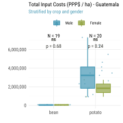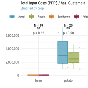
Breakdown across categories of farm input.
ttt(ppp ~ type | gender+crop, data=hh_prod_cost, render=fmt,
caption="Input Costs in Absolute Terms by Gender (PPP$ / ha) - Guatemala")| type | Statistic | bean | potato | ||
|---|---|---|---|---|---|
| Male | Female | Male | Female | ||
| Seeds | mean | 172 | 172 | 3,562 | 3,939 |
| median | 172 | 172 | 3,298 | 3,939 | |
| sd | 0 | 0 | 325 | 0 | |
| Fertilizer | mean | 919 | 919 | 922 | 919 |
| median | 919 | 919 | 923 | 919 | |
| sd | 0 | 0 | 2 | 0 | |
| Pesticides | mean | 2,141 | 2,141 | 2,433 | 2,426 |
| median | 2,141 | 2,141 | 2,438 | 2,426 | |
| sd | 0 | 0 | 6 | 0 | |
| Labor | mean | 3,425 | 3,425 | 5,593 | 5,577 |
| median | 3,425 | 3,425 | 5,604 | 5,577 | |
| sd | 0 | 0 | 14 | 0 | |
| Marketing | mean | 38,363 | 38,715 | 3,272,046 | 1,824,629 |
| median | 30,374 | 38,715 | 3,211,431 | 1,824,629 | |
| sd | 14,011 | 19,168 | 1,864,099 | 911,869 | |
tbl <- hh_prod_cost[, .(
ppp = mean(ppp, na.rm=T)
), keyby=.(gender, crop, type)]
ggplot(tbl, aes(gender, ppp, fill=type)) +
geom_bar(stat="identity", position="fill", alpha=.7, width=.6, color="white") +
scale_y_continuous(labels=percent) +
facet_wrap(~crop) +
labs(y="", x="",
title="Breakdown of Input Costs by Category - Guatemala",
subtitle="Stratified by crop and gender") +
theme_def(legend.position="right")
ttt(ppp ~ type | years+crop, data=hh_prod_cost, render=fmt,
caption="Input Costs in Absolute Terms by Years in Seed Group (PPP$ / ha) - Guatemala")| type | Statistic | bean | potato | ||
|---|---|---|---|---|---|
| < 5 | ≥ 5 | < 5 | ≥ 5 | ||
| Seeds | mean | 172 | 172 | 3,565 | 3,698 |
| median | 172 | 172 | 3,298 | 3,939 | |
| sd | 0 | 0 | 330 | 332 | |
| Fertilizer | mean | 919 | 919 | 922 | 921 |
| median | 919 | 919 | 923 | 919 | |
| sd | 0 | 0 | 2 | 2 | |
| Pesticides | mean | 2,141 | 2,141 | 2,433 | 2,430 |
| median | 2,141 | 2,141 | 2,438 | 2,426 | |
| sd | 0 | 0 | 6 | 6 | |
| Labor | mean | 3,425 | 3,425 | 5,593 | 5,587 |
| median | 3,425 | 3,425 | 5,604 | 5,577 | |
| sd | 0 | 0 | 14 | 14 | |
| Marketing | mean | 37,424 | 43,605 | 2,899,150 | 3,288,609 |
| median | 29,477 | 52,269 | 2,681,789 | 2,971,592 | |
| sd | 14,051 | 15,006 | 1,667,567 | 2,114,119 | |
tbl <- hh_prod_cost[, .(
ppp = mean(ppp, na.rm=T)
), keyby=.(years, crop, type)]
ggplot(tbl, aes(years, ppp, fill=type)) +
geom_bar(stat="identity", position="fill", alpha=.7, width=.6, color="white") +
scale_y_continuous(labels=percent) +
facet_wrap(~crop) +
labs(y="", x="",
title="Breakdown of Input Costs by Category - Guatemala",
subtitle="Stratified by crop and years in seed club") +
theme_def(legend.position="right")ttt(ppp ~ type | group+crop, data=hh_prod_cost, render=fmt,
caption="Input Costs in Absolute Terms by Seed Group (PPP$ / ha) - Guatemala")| type | Statistic | bean | potato | ||
|---|---|---|---|---|---|
| San Bartolo | Adat Axola Adipy | Acordi | Paquix | ||
| Seeds | mean | 172 | 172 | 3,939 | 3,298 |
| median | 172 | 172 | 3,939 | 3,298 | |
| sd | 0 | 0 | 0 | 0 | |
| Fertilizer | mean | 919 | 919 | 919 | 923 |
| median | 919 | 919 | 919 | 923 | |
| sd | 0 | 0 | 0 | 0 | |
| Pesticides | mean | 2,141 | 2,141 | 2,426 | 2,438 |
| median | 2,141 | 2,141 | 2,426 | 2,438 | |
| sd | 0 | 0 | 0 | 0 | |
| Labor | mean | 3,425 | 3,425 | 5,577 | 5,604 |
| median | 3,425 | 3,425 | 5,577 | 5,604 | |
| sd | 0 | 0 | 0 | 0 | |
| Marketing | mean | 38,277 | 38,537 | 3,469,319 | 2,640,548 |
| median | 29,782 | 30,374 | 2,973,965 | 2,468,071 | |
| sd | 15,203 | 13,360 | 2,276,833 | 1,179,128 | |
tbl <- hh_prod_cost[, .(
ppp = mean(ppp, na.rm=T)
), keyby=.(group, crop, type)]
ggplot(tbl, aes(group, ppp, fill=type)) +
geom_bar(stat="identity", position="fill", alpha=.7, width=.6, color="white") +
scale_y_continuous(labels=percent) +
facet_wrap(~crop, scales="free_x") +
labs(y="", x="",
title="Breakdown of Input Costs by Category - Guatemala",
subtitle="Stratified by crop and seed club") +
theme_def(legend.position="right")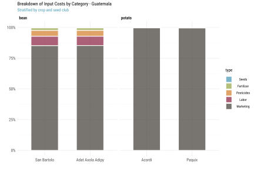
Are there significant differences across groups? We first compare input cost shares across gender, then across seed clubs.
ggBoxTest(hh_prod_cost,
aes(type, share, color=gender, fill=gender),
grp.c=aes(group=type), grp.s=aes(group=gender)) +
scale_y_continuous(labels=percent) +
facet_wrap(~crop) +
labs(x="", y="", fill="", color="",
title="Input Costs by Category (Percent of Total Costs by Ha) - Guatemala",
subtitle="Stratified by crop and gender") +
theme_def(legend.position="top")
ggBoxTest(hh_prod_cost,
aes(type, share, color=years, fill=years),
grp.c=aes(group=type), grp.s=aes(group=years)) +
scale_y_continuous(labels=percent) +
facet_wrap(~crop) +
labs(x="", y="", fill="", color="",
title="Input Costs by Category (Percent of Total Costs by Ha) - Guatemala",
subtitle="Stratified by crop and years in seed club") +
theme_def(legend.position="top")
ggBoxTest(hh_prod_cost,
aes(type, share, color=group, fill=group),
grp.c=aes(group=type), grp.s=aes(group=group)) +
scale_y_continuous(labels=percent) +
facet_wrap(~crop) +
labs(x="", y="", fill="", color="",
title="Input Costs by Category (PPP$ by Hectare) - Guatemala",
subtitle="Stratified by crop and seed club") +
theme_def(legend.position="top")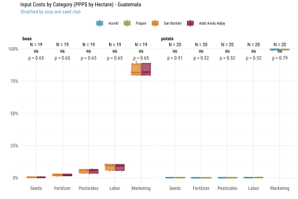
Differences between the 2 crops.
ggBoxTest(hh_prod_cost,
aes(type, share, color=crop, fill=crop),
grp.c=aes(group=type), grp.s=aes(group=crop)) +
scale_y_continuous(labels=percent) +
labs(x="", y="", fill="", color="",
title="Input Costs by Category (PPP$ by Hectare) - Guatemala",
subtitle="Stratified by crop") +
theme_def(legend.position="top")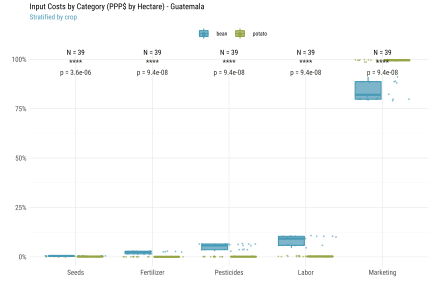
Efficiency
Differences in productivity measures (expected seed yields and actual sales) across groups.
ttt(yield_ha_kg ~ group | gender+crop, data=hh, render=fmt,
caption="Expected Seed Yield (kg / ha) - Guatemala")| group | Statistic | bean | potato | ||
|---|---|---|---|---|---|
| Male | Female | Male | Female | ||
| Acordi | mean | NA | NA | 186,521 | 84,235 |
| median | NA | NA | 168,470 | 84,235 | |
| sd | NA | NA | 111,053 | 42,118 | |
| Paquix | mean | NA | NA | 97,336 | NA |
| median | NA | NA | 84,640 | NA | |
| sd | NA | NA | 40,148 | NA | |
| San Bartolo | mean | 2,896 | 3,159 | NA | NA |
| median | 2,106 | 3,159 | NA | NA | |
| sd | 1,090 | 1,489 | NA | NA | |
| Adat Axola Adipy | mean | 2,106 | NA | NA | NA |
| median | 2,106 | NA | NA | NA | |
| sd | 0 | NA | NA | NA | |
ttt(sales_ha_kg ~ group | gender+crop, data=hh, render=fmt,
caption="Realized Seed Sales (kg / ha) - Guatemala")| group | Statistic | bean | potato | ||
|---|---|---|---|---|---|
| Male | Female | Male | Female | ||
| Acordi | mean | NA | NA | 42,593 | 41,723 |
| median | NA | NA | 41,723 | 41,723 | |
| sd | NA | NA | 1,506 | 0 | |
| Paquix | mean | NA | NA | 46,382 | NA |
| median | NA | NA | 46,939 | NA | |
| sd | NA | NA | 2,669 | NA | |
| San Bartolo | mean | 2,143 | 2,063 | NA | NA |
| median | 2,086 | 2,063 | NA | NA | |
| sd | 125 | 32 | NA | NA | |
| Adat Axola Adipy | mean | 2,111 | NA | NA | NA |
| median | 2,086 | NA | NA | NA | |
| sd | 53 | NA | NA | NA | |
ttt(yield_ha_kg ~ group | years+crop, data=hh, render=fmt,
caption="Realized Seed Sales (kg / ha) - Guatemala")| group | Statistic | bean | potato | ||
|---|---|---|---|---|---|
| < 5 | ≥ 5 | < 5 | ≥ 5 | ||
| Acordi | mean | NA | NA | 143,200 | 168,470 |
| median | NA | NA | 126,353 | 168,470 | |
| sd | NA | NA | 113,795 | 107,379 | |
| Paquix | mean | NA | NA | 96,731 | 98,747 |
| median | NA | NA | 84,640 | 84,640 | |
| sd | NA | NA | 31,991 | 64,645 | |
| San Bartolo | mean | 2,948 | NA | NA | NA |
| median | 2,106 | NA | NA | NA | |
| sd | 1,087 | NA | NA | NA | |
| Adat Axola Adipy | mean | 2,106 | 2,106 | NA | NA |
| median | 2,106 | 2,106 | NA | NA | |
| sd | 0 | 0 | NA | NA | |
ttt(sales_ha_kg ~ group | years+crop, data=hh, render=fmt,
caption="Realized Seed Sales (kg / ha) - Guatemala")| group | Statistic | bean | potato | ||
|---|---|---|---|---|---|
| < 5 | ≥ 5 | < 5 | ≥ 5 | ||
| Acordi | mean | NA | NA | 42,419 | 42,245 |
| median | NA | NA | 41,723 | 41,723 | |
| sd | NA | NA | 1,555 | 1,166 | |
| Paquix | mean | NA | NA | 46,889 | 45,200 |
| median | NA | NA | 46,939 | 46,939 | |
| sd | NA | NA | 2,582 | 3,011 | |
| San Bartolo | mean | 2,127 | NA | NA | NA |
| median | 2,086 | NA | NA | NA | |
| sd | 116 | NA | NA | NA | |
| Adat Axola Adipy | mean | 2,124 | 2,086 | NA | NA |
| median | 2,098 | 2,086 | NA | NA | |
| sd | 62 | 0 | NA | NA | |
Differences in efficiency measures across gender with mean comparison (Wilcoxon) p-value.
ggBoxTest(hh, aes(gender, yield_ha_kg, color=gender, fill=gender), cp=list(1:2)) +
scale_y_continuous(labels=comma) +
facet_wrap(~crop, scales="free_y") +
labs(x="", y="", fill="",
title="Expected Seed Yield (kg / ha) - Guatemala",
subtitle="Stratified by crop and gender") +
theme_def(legend.position="none")
ggBoxTest(hh, aes(gender, sales_ha_ppp, color=gender, fill=gender), cp=list(1:2)) +
scale_y_continuous(labels=comma) +
facet_wrap(~crop, scales="free_y") +
labs(x="", y="", fill="",
title="Total Seed Sales (PPP$ / ha) - Guatemala",
subtitle="Stratified by gender") +
theme_def(legend.position="none")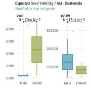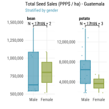
Differences in efficiency measures by years in seed club with mean comparison (Wilcoxon) p-value.
ggBoxTest(hh, aes(years, yield_ha_kg, color=years, fill=years), cp=list(1:2)) +
scale_y_continuous(labels=comma) +
facet_wrap(~crop, scales="free_y") +
labs(x="", y="", fill="",
title="Expected Seed Yield (kg / ha) - Guatemala",
subtitle="Stratified crop and by years in seed club") +
theme_def(legend.position="none")
ggBoxTest(hh, aes(years, sales_ha_ppp, color=years, fill=years), cp=list(1:2)) +
scale_y_continuous(labels=comma) +
facet_wrap(~crop, scales="free_y") +
labs(x="", y="", fill="",
title="Total Seed Sales (PPP$ / ha) - Guatemala",
subtitle="Stratified crop and by years in seed club") +
theme_def(legend.position="none")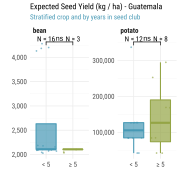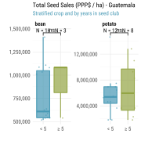
Differences in efficiency measures across seed clubs with global ANOVA p-value.
ggBoxTest(hh, aes(group, yield_ha_kg, color=group, fill=group)) +
scale_x_discrete(labels=label_wrap(5)) +
scale_y_continuous(labels=comma) +
facet_wrap(~crop, scales="free_y") +
labs(x="", y="", fill="",
title="Expected Seed Yield (Kg / ha) - Guatemala",
subtitle="Stratified by crop and seed club") +
theme_def(legend.position="none")
ggBoxTest(hh, aes(group, sales_ha_ppp, color=group, fill=group)) +
scale_x_discrete(labels=label_wrap(5)) +
scale_y_continuous(labels=comma) +
facet_wrap(~crop, scales="free_y") +
labs(x="", y="", fill="",
title="Total Seed Sales (PPP$ / ha) - Guatemala",
subtitle="Stratified crop and by seed club") +
theme_def(legend.position="none") 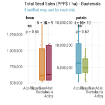
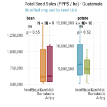
Looking at production frontiers (units of output vs. units of input). We expect S-shape curves with farmers at different levels of technical efficiency along the curve.
Note that in the approximated curves below we remove outliers with total input costs over PPP$ 6,000,000 per ha.
outlier <- hh[costs_ha_ppp > median(costs_ha_ppp) + 2*sd(costs_ha_ppp), hhid]
kbl(
caption="Farmers with total input costs > median + 2*sd",
hh[hhid %in% outlier, .(hhid, group, crop, yield_ha_kg, costs_ha_ppp)],
format.args=list(big.mark=","))| hhid | group | crop | yield_ha_kg | costs_ha_ppp |
|---|---|---|---|---|
| GTM004 | Acordi | potato | 294,823.2 | 6,396,837 |
| GTM005 | Acordi | potato | 336,940.8 | 7,308,707 |
| GTM007 | Acordi | potato | 252,705.6 | 5,484,968 |
ggplot(hh[!hhid %in% outlier], aes(costs_ha_ppp, yield_ha_kg)) +
geom_smooth(size=.8) +
geom_point(alpha=.7, shape=20, color=1) +
scale_x_continuous(labels=comma) +
scale_y_continuous(labels=comma) +
facet_wrap(~crop, scales="free") +
labs(x="", y="",
title="Production Frontier (Output vs. Input) - Guatemala",
subtitle="Each point is a respondent. Shade shows 90% CI (kg vs. PPP$ / ha)") +
theme_def(legend.position="none")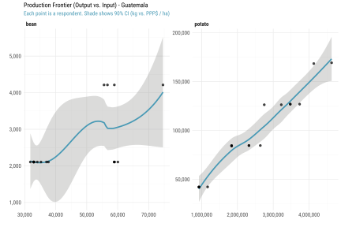
Profitability
Farmers’ gross profit margins by gender and years in seed club.
ttt(margin_ha_ppp ~ group+crop | gender+years, data=hh, render=fmt,
caption="Mean Gross Profit Margin in Absolute Terms (PPP$ / ha) - Guatemala")| group | crop | Statistic | < 5 | ≥ 5 | ||
|---|---|---|---|---|---|---|
| Male | Female | Male | Female | |||
| Acordi | potato | mean | 3,325,655 | 2,745,931 | 5,357,088 | 1,366,090 |
| median | 2,525,539 | 2,745,931 | 5,505,612 | 1,366,090 | ||
| sd | 2,844,373 | NA | 1,149,897 | 650,463 | ||
| Paquix | potato | mean | 2,696,532 | NA | 2,540,506 | NA |
| median | 2,636,137 | NA | 1,826,630 | NA | ||
| sd | 984,817 | NA | 1,852,563 | NA | ||
| San Bartolo | bean | mean | 745,174 | 755,928 | NA | NA |
| median | 578,783 | 755,928 | NA | NA | ||
| sd | 310,640 | 380,543 | NA | NA | ||
| Adat Axola Adipy | bean | mean | 702,153 | NA | 853,020 | NA |
| median | 561,133 | NA | 1,025,013 | NA | ||
| sd | 260,632 | NA | 297,900 | NA | ||
ttt(margin_ha_sh ~ group+crop | gender+years, data=hh, render=fmt_pct,
caption="Mean Gross Profit Margin in Relative Terms (% of variable input costs) - Guatemala")| group | crop | Statistic | < 5 | ≥ 5 | ||
|---|---|---|---|---|---|---|
| Male | Female | Male | Female | |||
| Acordi | potato | mean | 99% | 100% | 100% | 99% |
| median | 100% | 100% | 100% | 99% | ||
| sd | 1% | NA | 0% | 1% | ||
| Paquix | potato | mean | 100% | NA | 99% | NA |
| median | 100% | NA | 99% | NA | ||
| sd | 1% | NA | 1% | NA | ||
| San Bartolo | bean | mean | 1 632% | 1 635% | NA | NA |
| median | 1 588% | 1 635% | NA | NA | ||
| sd | 100% | 148% | NA | NA | ||
| Adat Axola Adipy | bean | mean | 1 622% | NA | 1 675% | NA |
| median | 1 578% | NA | 1 740% | NA | ||
| sd | 95% | NA | 112% | NA | ||
Note that 0 respondents show negative margins.
kbl(caption="Respondents with negative gross margins.",
hh[margin_ha_ppp < 0,
.(hhid, code, group, crop, costs_ha_ppp, yield_ha_kg, sales_ha_kg, margin_ha_ppp)])| hhid | code | group | crop | costs_ha_ppp | yield_ha_kg | sales_ha_kg | margin_ha_ppp |
|---|---|---|---|---|---|---|---|
outlier <-
kbl(caption="Respondents with gross margins > median + 3*sd",
hh[margin_ha_ppp > median(margin_ha_ppp) + 3*sd(margin_ha_ppp),
.(hhid, code, group, crop, costs_ha_ppp, yield_ha_kg, sales_ha_kg, margin_ha_ppp)],
format.args=list(big.mark=",", digits=1))ggplot(hh, aes(x=hhid, color=group)) +
geom_hline(aes(yintercept=0), color=1) +
geom_linerange(aes(ymin=0, ymax=margin_ha_ppp), size=.6) +
geom_point(aes(y=0), shape=20, size=1.4) +
geom_point(aes(y=margin_ha_ppp, shape=margin_ha_ppp < 0, fill=group), size=1.4) +
scale_y_continuous(labels=comma) +
scale_shape_manual(values=24:25) +
guides(x="none", shape="none") +
labs(x=NULL, y=NULL, color="", fill="",
title="Profit Margin (PPP$ / ha) - Guatemala",
subtitle="Each bar is a respondent's gross profit margin") +
theme_def(
legend.position="right",
panel.grid.major.x=element_blank()
)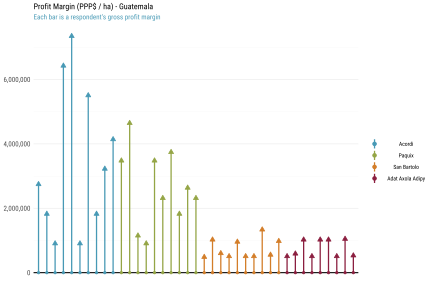
Farmers’ gross profit margins by gender and across groups in both absolute terms and in relative terms as percentage of total costs per hectare.
ggBoxTest(hh[!hhid %in% outlier],
aes(gender, margin_ha_ppp, color=gender, fill=gender), cp=list(1:2)) +
scale_y_continuous(labels=comma) +
facet_wrap(~crop, scales="free_y") +
labs(x="", y="", fill="", color="",
title="Gross Profit Margin in Absolute Terms - Guatemala",
subtitle="Stratified by gender (PPP$ / ha)") +
theme_def(legend.position="none")
ggBoxTest(hh[!hhid %in% outlier],
aes(gender, margin_ha_sh, color=gender, fill=gender), cp=list(1:2)) +
scale_y_continuous(labels=percent) +
facet_wrap(~crop, scales="free_y") +
labs(x="", y="", fill="", color="",
title="Gross Profit Margin in Relative Terms - Guatemala",
subtitle="Stratified by gender (% of total costs)") +
theme_def(legend.position="none")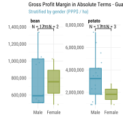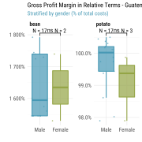
ggBoxTest(hh[!hhid %in% outlier],
aes(years, margin_ha_ppp, color=years, fill=years), cp=list(1:2)) +
scale_y_continuous(labels=comma) +
facet_wrap(~crop, scales="free_y") +
labs(x="", y="", fill="",
title="Gross Profit Margin in Absolute Terms - Guatemala",
subtitle="Stratified by years in seed club (PPP$ / ha)") +
theme_def(legend.position="none")
ggBoxTest(hh[!hhid %in% outlier],
aes(years, margin_ha_sh, color=years, fill=years), cp=list(1:2)) +
scale_y_continuous(labels=percent) +
facet_wrap(~crop, scales="free_y") +
labs(x="", y="", fill="",
title="Gross Profit Margin in Relative Terms - Guatemala",
subtitle="Stratified by years in seed club (% of total costs)") +
theme_def(legend.position="none")

ggBoxTest(hh[!hhid %in% outlier],
aes(group, margin_ha_ppp, color=group, fill=group)) +
scale_x_discrete(labels=label_wrap(5)) +
scale_y_continuous(labels=comma) +
facet_wrap(~crop, scales="free_y") +
labs(x="", y="",
title="Gross Profit Margin in Absolute Terms - Guatemala",
subtitle="Stratified by seed club (PPP$ / ha)") +
theme_def(legend.position="none")
ggBoxTest(hh[!hhid %in% outlier],
aes(group, margin_ha_sh, color=group, fill=group)) +
scale_x_discrete(labels=label_wrap(5)) +
scale_y_continuous(labels=percent) +
facet_wrap(~crop, scales="free_y") +
labs(x="", y="",
title="Gross Profit Margin in Relative Terms - Guatemala",
subtitle="Stratified by seed club (% of total costs)") +
theme_def(legend.position="none")ggplot(hh[!hhid %in% outlier], aes(member_years, margin_ha_ppp)) +
geom_smooth(size=.8) +
geom_point(alpha=.7, shape=20) +
scale_x_continuous(limits=c(0, 22)) +
scale_y_continuous(labels=comma) +
labs(x="", y="", color="",
title="Gross Profit Margin in Absolute Terms vs. Years in Seed Club - Guatemala",
subtitle="Each point is a respondent (years vs. PPP$)") +
theme_def(legend.position="top")
Correlation
Significant pairwise associations.
ggpairs(
hh[, .(`seed club`=group, `years in club`=member_years,
`costs PPP$`=costs_ha_ppp, `seed yield kg/ha`=yield_ha_kg,
`margin PPP$`=margin_ha_ppp, `margin %`=margin_ha_sh)],
upper = list(
continuous="cor",
combo=wrap("summarise_by", color=pal[1:4], size=2)),
lower = list(
continuous=wrap("smooth", shape=NA),
combo=wrap("box_no_facet", fill=pal[1:4], alpha=.8)),
diag = list(
continuous=wrap("densityDiag", fill=NA),
discrete=wrap("barDiag", fill=pal[1:4], alpha=.8)),
title="Correlogram stratified by seed club - Guatemala"
) +
theme_def(
strip.text=element_text(hjust=.5),
axis.text.x=element_text(angle=-45),
panel.grid.major=element_blank()
)
ggpairs(
hh[, .(gender, `years in club`=member_years,
`costs PPP$`=costs_ha_ppp, `seed yield kg/ha`=yield_ha_kg,
`margin PPP$`=margin_ha_ppp, `margin %`=margin_ha_sh)],
upper = list(
continuous="cor",
combo=wrap("summarise_by", color=pal[1:2], size=2)),
lower = list(
continuous=wrap("smooth", shape=NA, color=hh[, pal[gender]]),
combo=wrap("box_no_facet", fill=pal[1:2], alpha=.8)),
diag = list(
continuous=wrap("densityDiag", fill=NA),
discrete=wrap("barDiag", fill=pal[1:2], alpha=.8)),
title="Correlogram stratified by gender - Guatemala"
) +
theme_def(
strip.text=element_text(hjust=.5),
panel.grid.major=element_blank()
)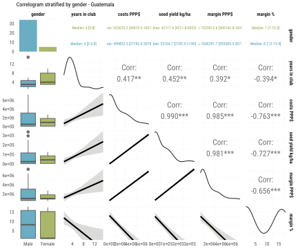
ggpairs(
hh[, .(`years in club`=years,
`costs PPP$`=costs_ha_ppp, `seed yield kg/ha`=yield_ha_kg,
`margin PPP$`=margin_ha_ppp, `margin %`=margin_ha_sh)],
upper = list(
continuous="cor",
combo=wrap("summarise_by", color=pal[1:2], size=2)),
lower = list(
continuous=wrap("smooth", shape=NA, color=hh[, pal[gender]]),
combo=wrap("box_no_facet", fill=pal[1:2], alpha=.8)),
diag = list(
continuous=wrap("densityDiag", fill=NA),
discrete=wrap("barDiag", fill=pal[1:2], alpha=.8)),
title="Correlogram stratified by years in seed club - Guatemala"
) +
theme_def(
strip.text=element_text(hjust=.5),
panel.grid.major=element_blank()
)saveRDS(hh, "../tmp/data_gtm.rds")